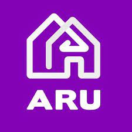
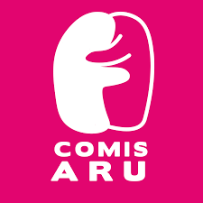

Buscamos organizar as principais informções e reflexões úteis
Para manutenção de um ambiente universitário acolhedor para todos
Engajar conscientização
Separamos pautas relevantes que necessitam de maior difusão, para conscientizar e informar
Disponibilizar informações
Existem diversos canais de suporte e ajuda que podem ser úteis para situações adversas, nesse site listamos diversas iniciativas disponíveis para você
Gerar Reflexão
O objetivo dessa página é que ao final da leitura haja a reflexão sobre os temas abordados, identificando como podemos ser mais ativos para uma sociedade melhor
Caso precise de ajuda, busque pelas seguintes instituições
UNICAMP
Universidade Estadual de Campinas

ARU
Associação de Republicas da Unicamp

CA
Comissão acolhedora
Um pouco sobre o feminicídio no Brasil
O feminicídio é definido como o assassinato de mulheres cometido em razão do gênero, isto é, a vítima tem sua vida tirada apenas pelo fato de ser mulher. De acordo com a Câmara Municipal de São Paulo, o Brasil é o 5° país que mais pratica o feminicídio no cenário mundial, ainda que existam punições àqueles que cometem esse crime, as quais estão previstas na lei 13.104/15. Tal documento ressalta que o feminicídio pode decorrer das seguintes condições: violências domésticas e familiar, e menosprezo ou discriminação à condição da mulher.
O feminicídio que decorre de violências doméstica e familiar é aquele o autor do crime possui ou já teve algum vínculo familiar ou laço afetivo com a vítima, enquanto o que acontece por meio de menosprezo ou discriminação à condição da mulher está associado à misoginia e/ou à objetificação do corpo feminino, sendo que o autor não tem necessariamente um vínculo com vítima.
De acordo com o Dossiê Violência Contra a Mulher, realizado pelo Instituto Patrícia Galvão, com a criação da lei, além de a problemática ser tratada com maior rigidez e seriedade, ela passa a ter maior visibilidade e, assim, pode criar mais mecanismos que ajudem no combate à violência de gênero. Nesse sentido, o dossiê cita três impactos importantes com a tipificação penal: trazer visibilidade, identificar entraves na aplicação da Lei Maria da Penha; ser instrumento para coibir a impunidade.
Dessa forma, é importantíssimo que se faça a reflexão da problemática envolvendo a violência contra as mulheres em todas as suas formas de ocorrência. Só assim poderemos entender que a perpetuação dessa cultura significa a maior opressão das mulheres e culmina em crimes como o feminicídio, os quais se pautam em uma cultura que julga o corpo feminino como um bem público, passível de interferências e coerções que violam sua integridade física e moral.
O feminismo é o movimento social que luta contra a violência de gênero e pela igualdade de condições entre homens e mulheres, no sentido de que ambos tenham os mesmos direitos e as mesmas oportunidades.
A opressão sobre as mulheres, no entanto, é estrutural e alcança a todas. Tal realidade é afetada por fatores como etnia, classe social, escolaridade, renda, idade, entre outros. Sendo assim, as demandas de mulheres de classe média alta são diferentes das demandas de mulheres de classe média ou de operárias.
Em relação a essa disparidade, mulheres de classe média reivindicavam o direito de trabalhar fora, enquanto as operárias já o faziam antes, em más condições, e desejavam melhores salários. As ricas, por sua vez, aspiravam ao direito à posse de propriedades em seu próprio nome. Logo, cada classe possui as suas demandas e a discussão sobre o feminismo precisa contemplar, evidentemente, todas elas.
Além disso, os diferentes ideários políticos também implicam diferentes visões de mundo e, portanto, diferentes reivindicações. Dessa forma, existem diferentes vertentes feministas que enfatizam diferentes aspectos da sociedade. Nesse âmbito, é importante pontuar que feminismo não é o oposto de machismo, pois o machismo é uma construção social que promove e justifica atos de agressão e opressão contra as mulheres. Já o feminismo, conforme mencionamos, é o movimento social que luta contra as manifestações do machismo na sociedade. Assim, o objetivo final do feminismo é construir uma sociedade que ofereça igualdade de condições entre gêneros.
A importância do feminismo
Atualmente, no Brasil, o feminismo segue discutindo questões que afetam as mulheres em diferentes temas. Primeiramente, há a desvalorização das trabalhadoras em comparação aos homens, pois, segundo pesquisas feitas pelo Banco Interamericano de Desenvolvimento (BID), as mulheres ganham em média 30% menos que os homens para realizar a mesma função.
Além disso, há a questão do assédio e da violência contra a mulher. Segundo estudos conduzidos pela Secretaria de Políticas para Mulheres do Governo Federal, uma mulher é estuprada no Brasil a cada 10 minutos e, a cada 90 minutos, uma mulher é assassinada no país. Em relação a esse quadro de violência, um dos grandes marcos foi o decreto da Lei nº 11.340, de 7 de agosto de 2006, também conhecida como Lei Maria da Penha.
O feminismo é caracterizado pela pluralidade de pautas, portanto, está em constante transformação. A representatividade política ainda deixa muito a desejar, visto que a presença de mulheres em cargos eletivos ainda é pequena, portanto, há uma sub-representação desse grupo nos parlamentos e governos. Conforme dados da Oxfam, em 2018, apenas 15% de parlamentares eleitos no Brasil eram mulheres.
No mercado de trabalho, da mesma forma, há ainda poucas mulheres em posições de chefia, especialmente nas grandes empresas. No ambiente doméstico, por outro lado, o trabalho continua majoritariamente delegado às mulheres, ainda que elas trabalhem fora e contribuam financeiramente com as despesas da família. Segundo a Oxfam, somente 10% das trabalhadoras domésticas do mundo são amparadas por leis trabalhistas.
Por fim, a feminista Chimamanda Ngozi Adiche em seu livro “Sejamos Todos Feministas”, discorre um pouco mais acerca do tema: “A questão de gênero é importante em qualquer canto do mundo. É importante que comecemos a planejar e sonhar um mundo diferente. Um mundo mais justo. Um mundo de homens mais felizes e mulheres mais felizes, mais autênticos consigo mesmos. E é assim que devemos começar: precisamos criar nossas filhas de uma maneira diferente. Também precisamos criar nossos filhos de uma maneira diferente.”
Mulheres no ambiente universitário isso é um teste
Aproximadamente 20% da população entre 25 e 34 anos possui um diploma de nível superior no Brasil em 2019 (Inep), com um período médio de 5 anos durante a graduação e vivendo um ambiente único. No entanto, atualmente, as mulheres correspondem a 57% dos universitários no Brasil.
Hoje, 67% das mulheres universitárias admitiram já ter sofrido algum tipo de violência no ambiente acadêmico e 36% deixaram de fazer alguma atividade por causa de medo ou preconceito.
Sobre o início do período acadêmico, a pesquisadora Giselle Santos ressaltou que esse é um momento que merece atenção especial, por ser quando muitos casos de violência de gênero acontecem. “Os trotes e festas são os que acumulam mais relatos de violência contra a mulher no ambiente acadêmico. A relação hierárquica que muitas vezes acontece opera de modo perverso, necessita atenção redobrada”, afirma Santos.
A professora Roseli Rodrigues de Mello apontou um dado da pesquisa do instituto Avon que 63% das mulheres que sofreram violência admitiram não ter denunciado ou reagido. “A barreira do silêncio é a primeira que devemos quebrar. Porém é preciso mais. É necessário união, numa rede de mulheres universitárias aliada a meios externos de denúncia, acolhimento e que puna os agressores”, diz.
Machismo estrutural
O machismo estrutural é baseado na manutenção dos elementos do corpo social de uma forma que sustenta a dominação patriarcal, enaltecendo valores definidos como "masculino" em detrimento dos valores construídos como "femininos". Tal realidade pode ser observada em diversos âmbitos e situações rotineiras, e uma das áreas em que o machismo estrutural é explícito é na política do nosso país.
As mulheres representam apenas 15% do Congresso Nacional, que é formado em sua grande maioria por homens brancos, heterossexuais, empresários e ruralistas, que, consequentemente, são as vozes e perspectivas dessas pessoas que estão sendo representadas majoritariamente na formulação dos projetos de lei que impactam a vida de toda a população.
O Código Civil de 1916, anterior ao atual que entrou em vigor apenas em 2002, possuía artigos absurdos, como o direito do marido de autorizar ou não a esposa de exercer sua profissão ou receber herança. Um documento legislativo como esse se manter em vigor até recentemente mostra o quanto a sociedade foi moldada para a manutenção do patriarcado que continua ecoando nas relações nos dias de hoje.
Os recentes debates sobre proibição do aborto e propostas de leis sobre o tema mostram a hipocrisia de um sistema em que a decisão sobre o corpo e futuro de mulheres são decididos por homens. Por isso, é importante que apoiemos as mulheres para que elas tenham cada vez mais espaço na política e sejam inspiração e referência para outras mulheres.
Violência contra a mulher: suporte e atendimento às vítimas na Unicamp
Assédio e violência sexual são um problema nacional e que infelizmente está presente também no ambiente universitário. Com isso, faz-se necessária a presença de órgãos e movimentos para que essa questão possa ser tratada da melhor forma, desde a prevenção até o suporte às vítimas desses abusos.
Dentro da Universidade Estadual de Campinas (Unicamp), existem núcleos e secretarias que trabalham no combate a esses abusos, como o SAPPE, órgão da Universidade, que tem por objetivo prestar assistência psicológica e psiquiátrica aos alunos regulares (de graduação e de pós-graduação stricto sensu) da Unicamp. Os atendimentos são realizados em Campinas, Piracicaba (FOP) e Limeira (FCA e FT); CAISM, Programa de Atendimento ás mulheres vitimas de violência sexual e o SAVS, Serviço de atenção a violência sexual.
Os três órgãos citados atuam no apoio aos casos ocorridos, porém, cada um está direcionado para uma questão mais específica. O SAPPE busca dar um apoio e acompanhamento psicológico às vitimas, já o CAISM presta atendimento em relação à violência sexual sofrida e, por fim, o SAVS é responsável por acionar setores especializados da Unicamp de acordo com as especificidades de cada caso, oferecendo orientação e acolhendo as queixas, mas não tem poder para julgar ou punir envolvidos.
O termo transfobia se refere a todo e qualquer tipo de segregação às pessoas trans, através de: agressões físicas, psicológicas ou verbais, visando a exclusão social e repressão dos direitos de pessoas transexuais e travestis.
De acordo com o projeto TvT (Transrespect versus Transphobia Worldwide), iniciado no ano de 2008, que realiza o mapeamento de dados de assassinatos contra a população trans de países pelo mundo, o Brasil vem sendo, desde a criação do projeto, o país que mais comete atentados contra a vida de pessoas trans, e, apesar da queda de assassinatos de 2020 para 2021, os números do Brasil ainda estão acima da média do demais países.
Embora esses dados sejam alarmantes, apenas no ano de 2019 o STF decidiu a favor da criminalização dos atos de transfobia e de demais LGBTfobia, equiparando-o a crimes de racismo, previstos pela Lei nº 7716/89, até a criação pelo Congresso Nacional de uma legislação específica para tais crimes. A pena por cometer é de 3 a 5 anos de reclusão. Atualmente, em 2022, o STJ estabeleceu que a Lei Maria da Penha, Lei 11340/2006, se aplica aos casos de violência doméstica ou familiar contra mulheres transexuais.
Ainda que a visibilidade da população trans esteja aumentando, é um crescimento vagaroso, que permanece distante de ser o ideal, tanto da perspectiva jurídica, quanto da social. Portanto é necessária a reflexão acerca do tema visando a normalização e o fim da manutenção da cultura de opressão e exclusão desta comunidade.